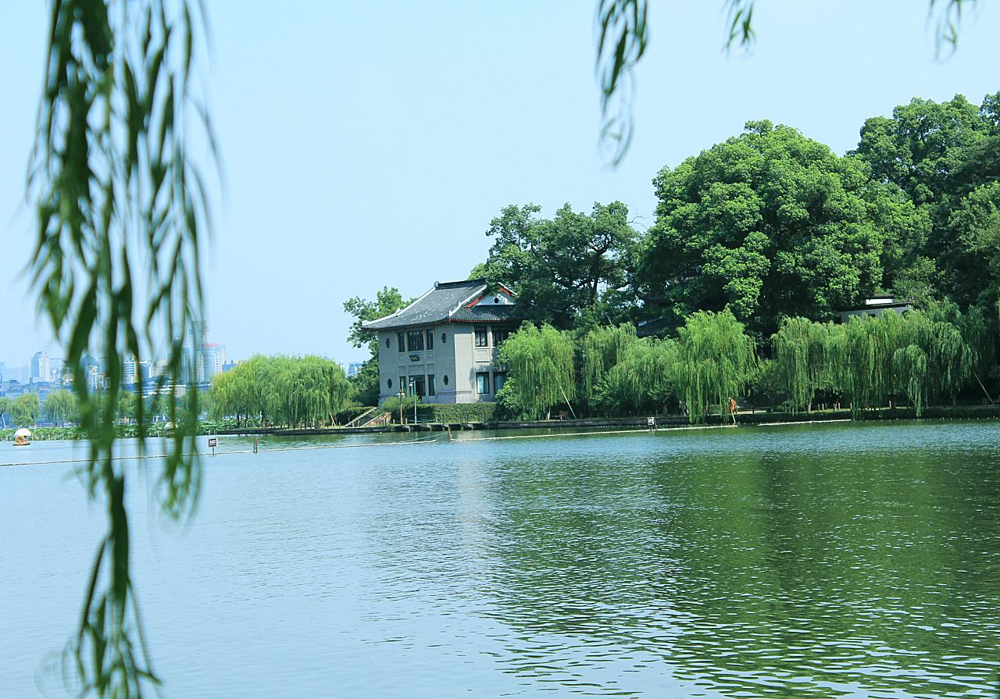

走进泰国
泰国位于亚洲中南半岛中部，东南临泰国湾，西南濒安达曼海。西北与缅甸为邻，西南与马来西亚交接，东北毗连老挝，东南与柬埔寨接壤，总面积513,115平方公里， 人口60,400,000人，是以泰族人为主，生活着华人、缅甸人、马来人、印度人、老挝人等的多民族国家。
泰国以“千佛之国”闻名于世，素有“黄袍佛国 ”美誉，是一个具有两千多年佛教史的文明古国，在美丽富饶的国土上，有30,OOO多座充满神话色彩的古老寺院和金碧辉煌的宫殿。
推荐景点

最爱湖东行不足，绿杨荫里白沙堤。
丝丝阳光照在湖面，湖底好似有金子的，金光闪闪，十分动人。西湖是美的。春回大地，走在西湖的百堤上望着平静的湖面。
凤凰城里凤凰游，人自堤行江自流。
如果要说浪漫，最佳的选择应该是凤凰古城了。古城到了夜晚，迷离的夜色，沱江边飞檐翘角的吊脚楼泛着古意。酒吧不时传来音乐声，如梦幻般摩沙着古城的夜空。